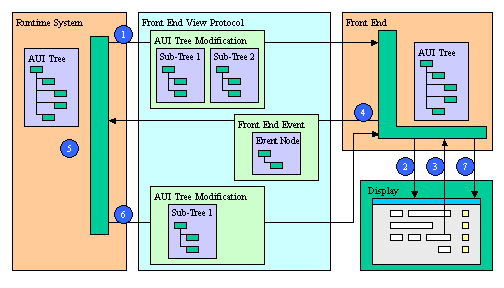

This page describes the Front End Protocol: the communication between the Runtime System and the Front End.
The purpose of the Front End Protocol is to synchronize the Abstract User Interface (AUI) Tree maintained by the Runtime System and the corresponding copy held by the Front End. For more details about these concepts, see the Dynamic User Interface.
The AUI Tree is used by the Front End to create graphical objects. The Front End and the Runtime System have the same version of the AUI Tree. This way, communications correspond to AUI Tree synchronization operations: on one hand the Front End sends modification requests to the Runtime System (also called Front End Events); on the other hand, the Runtime System analyses and validates Front End requests, performs some codes if required, and sends back modification orders.
The following schema describes typical communication between the Runtime System and the Front End:

In the Front End Protocol, the type of all attributes is string. The value of the attributes follows the same rules as 4gl string literals:
01 { GroupBox 25 { { text "this is a \"GroupBox\""} } {}}The Runtime System sends commands to the Front End in order to modify the User Interface. As discussed earlier, these commands are modifications of the AUI Tree. Modifications can be:
om command-id
{
[ { { appendNodeCommand | updateNodeCommand | removeNodeCommand } } ] [...]
}
Warning: There is no verification made about this order. The communication wire is supposed to be reliable and the Runner and the Front End do not perform verification about lost commands.
The an command adds one or several children and their attributes to a specified node. Several children (and sub-children) and can be added in the same an command. This command is sent by the Runtime System when there are new graphical objects to display, and to initialize communication.
an parent-id new-node
Where new-node is :
tagName new-id { [ attribute-list ] } { [ child-list ] } }
Where attribute-list is :
{ attribute-name "attribute-value" } [...]
Where children-list is :
{ new-node } [...]
This example shows an an command that creates a Menu (a Menu node is added) :
01an 0 Menu 356 { { active "1"} { text "MAIN"} { posY "0"} { selection "357"} }02{03{ MenuAction 357 { { name "Option1"} { text "Option1"} { comment ""} } {}}04{ MenuAction 358 { { name "Flow"} { text "Flow"} { comment ""} } {}}05{ MenuAction 359 { { name "Window"} { text "Window"} { comment "OPEN WINDOW"} } {}}06{ MenuAction 360 { { name "Form"} { text "Form"} { comment "form: scroll, erase..."} } {}}07{ MenuAction 361 { { name "Dialog"} { text "Dialog"} { comment ""} } {}}08{ MenuAction 362 { { name "Display"} { text "Display"} { comment ""} } {}}09{ MenuAction 363 { { name "Options"} { text "Options"} { comment "OPTIONS"} } {}}10{ MenuAction 364 { { name "Exit"} { text "Exit"} { comment ""} } {}}11}
The rn command removes a specific node. This command is used when graphical objects are no longer required and need to be removed from the User Interface.
rn node-id
This example shows a rn command that removes a node from the AUI Tree; in this example, the node removed would be a MenuAction node created by the an command in the previous example.
01 rn 357The un command modifies some attributes of a specific node. This command is used to modify the aspect of a widget, for example to validate the value entered by a user in a form field. This command is also used to confirm a focus change, modifying the focus attribute of the UserInterface node.
un node-id { [ attribute-list ] }
Where attribute-list is :
{ attribute-name "attribute-value" } [...]
This example shows an un command confirming a focus change: the focus now goes to the Menu option identified by id "358", created by the an command described in the example below. The UserInterface node has always an id equal to 0 (zero).
01 un 0 { focus "358" }The Front End sends "modification requests" represented as "Front End Events" to the Runtime system. A group of modification requests can be sent in the same event _om command.
These events can be:
events associated to any defined action (ActionEvent). This type of event is sent if a user invokes an enabled Action: Action within Dialog, MenuAction within Menu or StartMenuCommand within StartMenu.
A very basic Front End needs only to handle KeyEvent events, and can send all keys pressed by the user to the Runtime System. For performance and more enhancements, most of the key pressed events are handled locally by the Front End. Only the keys mentioned above are sent.
event _om command-id {}
{
{ { ConfigureEvent 0 { { idRef "object-id" } attribute-list } }
| { KeyEvent 0 { { keyName "key-value" } } }
| { ActionEvent 0 { { idRef "object-id" } } }
| { FunctionCallEvent 0 { { result "result-value" } } }
| { DestroyEvent 0 { { status "status-value" } { message "message-value" } } }
} [...]
}
Where attribute-list is :
{ attribute-name "attribute-value" } [...]
This example shows an event _om command corresponding to the following interaction:
01event _om 3 {}02{03{ ConfigureEvent 0 { { idRef "35" } { value "someText" } { cursor "4" } } }04{ ConfigureEvent 0 { { idRef "32" } { cursor "6" } } }05}
Communication is initiated by the Runtime System, which sends some meta information to the Front End. The meta information sent is "encoding". The Front End replies with some information, to include the version of the Front End. With communication initialized, the Runtime System sends the first version of the AUI Tree, generated according to the interactive elements used in the program (see Menus, Windows and Forms).
The root node of the Tree is the UserInterface node. This node is sent once to the Front End. The append node command (an) is used to create the root node with an id of zero ('0'). The append node command is then used to add all the children needed by the Front End to build the initial Graphical User Interface.
DVM : meta Connection {
{ encoding "character-set" }
{ protocolVersion "protocol-version" }
{ interfaceVersion "interface-version" }
{ runtimeVersion "runtime-version" }
{ compression "zlib|none" }
{ encapsulation "0|1" }
}
FE : meta Client {
{ name "client-type" }
{ version "client-version" }
{ host "hostname" }
{ port "tcpport" }
{ connections "count" }
{ frontEndID2 "frontend-ID2" }
{ compression "zlib|none" }
{ encapsulation "0|1" }
{ filetransfer "0|1" }
}
Compression might be used in the GUI protocol to reduce the amount of data exchanged between the front-end and the application server. Compression is typically useful on slow networks. The compression algorithm is provided by the standard ZLIB library of the system.
Compression makes sense on slow networks (for example, with a phone-line dialup modem, or broadband modem based networks); On fast networks (like 100 Mbps Ethernet based networks), compression uses un-necessary processor time.
Compression is disabled by default, and can be enabled with this FGLPROFILE entry:
gui.protocol.format = "zlib"
If the above parameter is defined, but the ZLIB library is not installed on your system, compression cannot be supported, and the program will stop with error -6317.
Note that when using the Genero Web Client (GWC/GAS), compression is not useful and is automatically disabled.
To properly see the GUI communication in a front-end log window, set the environment variable FGLGUIDEBUG to 1.